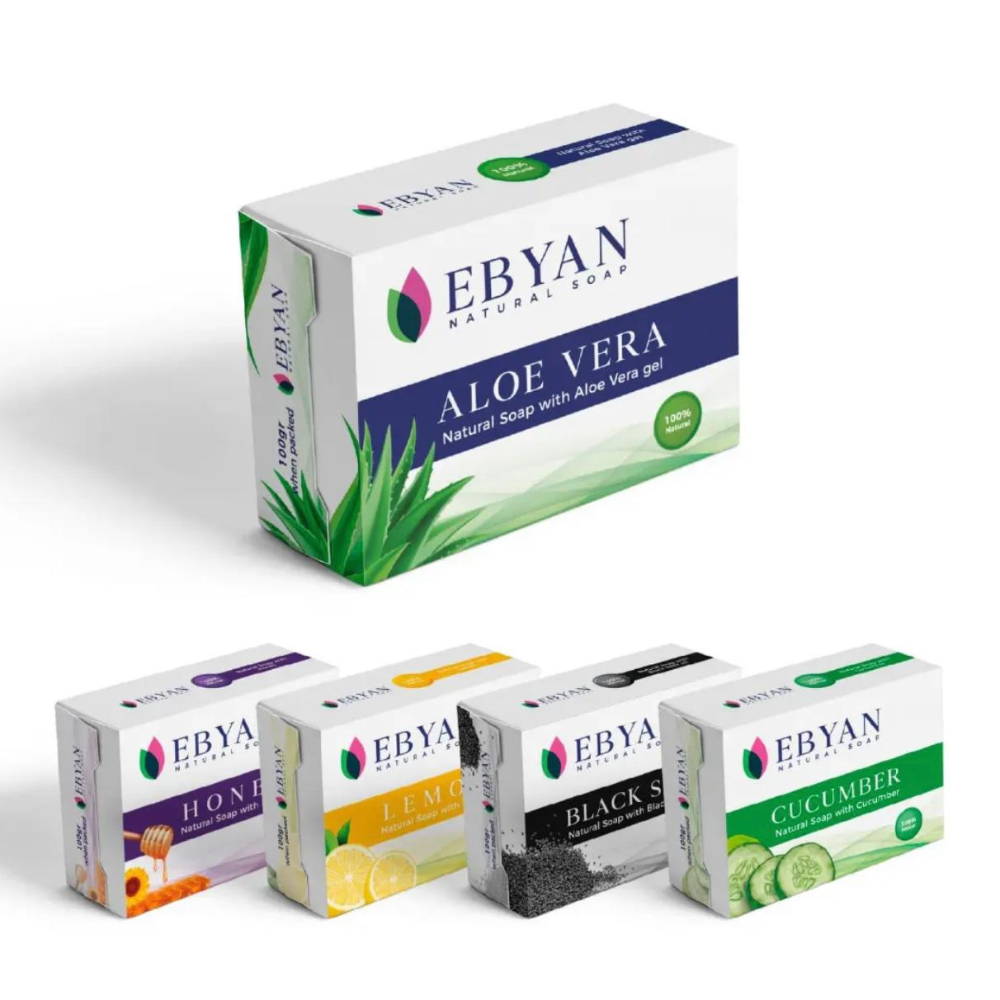

EBYAN NATURAL SOAP
Explore
every benefit.
Discover the benefits of every Ebyan soap. Choose a soap to explore its ingredients, qualities and everyday skincare advantages.
EXPLORE SOAPS
OUR SOAP COLLECTION
More advantages.
CHOOSE A SOAP